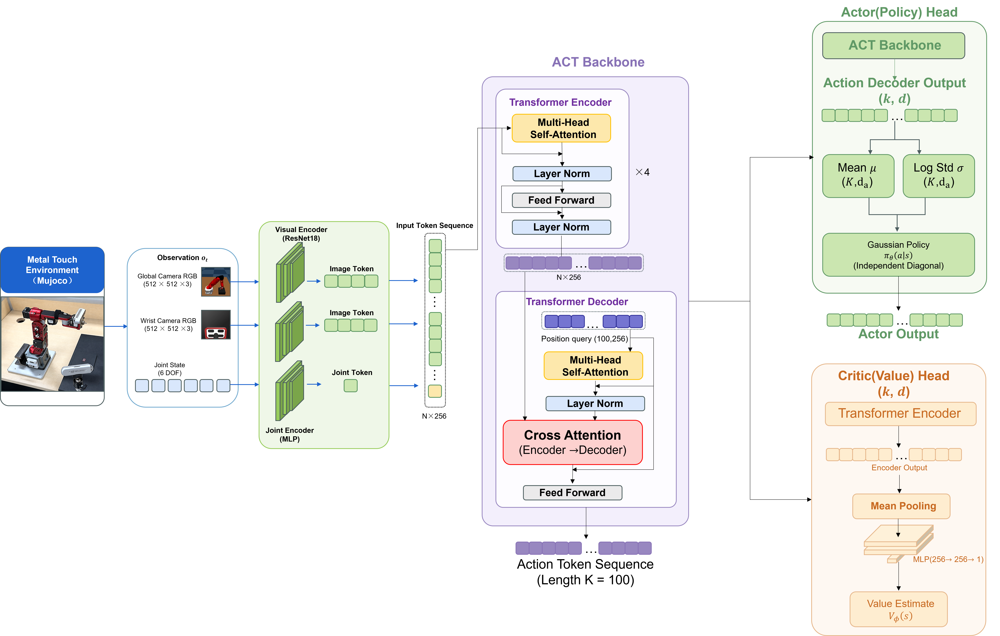
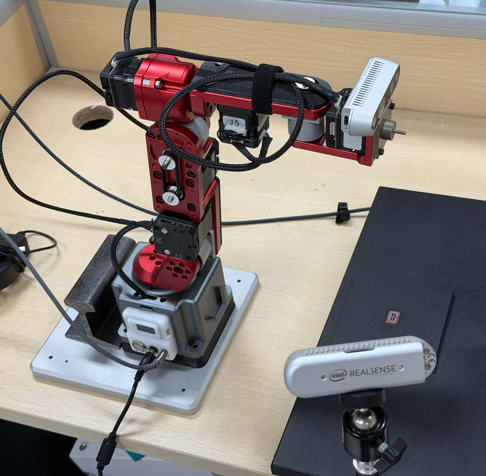
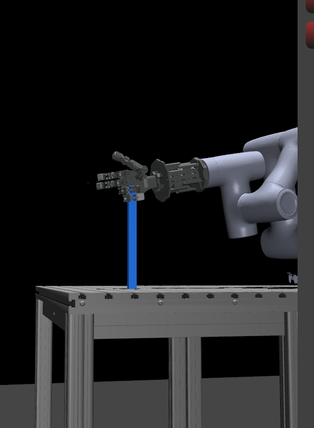

Featured / active
Featured / active01DEXTEROUS TELEOPERATION
CR3 × CRAFT
DexJoCo Teleop
把 CR3 机械臂、CRAFT 灵巧手、MediaPipe / HaMeR 和 MuJoCo 接成一条可运行的单目遥操作链路，并持续推进到受保护的 15 电机 Sim2Real。
View showcase ↗ROBOTICS · IMITATION · TELEOPERATION
我是 Yujie Pang。我的工作连接仿真、视觉、控制与真实硬件，让机器人从“能动”走向“会做”。
SELECTED WORK / 2020—NOW
不是孤立的 demo，而是一条从机械结构、仿真环境、感知与控制，到数据和策略学习的完整链路。
Featured / active把 CR3 机械臂、CRAFT 灵巧手、MediaPipe / HaMeR 和 MuJoCo 接成一条可运行的单目遥操作链路，并持续推进到受保护的 15 电机 Sim2Real。
View showcase ↗ POLICY / ROLLOUT
POLICY / ROLLOUT VALIDATION / MUJOCO
VALIDATION / MUJOCO双臂 quad-insertion 环境、LeRobot 数据转换、ACT 推理和 MuJoCo / PPO 验证。
View repository ↗
METHOD / ACT + PPO
REAL WORLD / CONTACT SETUP基于 MuJoCo Metal–Rubber 接触场景，用动作块 PPO 微调预训练 ACT 策略，研究接触奖励、KL anchoring 和策略适配。
View repository ↗
用优化式重定向把 MediaPipe 手部关键点映射到 20 关节仿真模型，同时保留 15 个独立实机变量。
View project ↗整理可复用的 CR3 MuJoCo XML / MJCF、URDF、Xacro 和网格资源，服务于后续控制与仿真任务。
View repository ↗
集中管理实验配置、轨迹、结果、图表和论文材料，把一次次硬件试验沉淀成可复现的研究记录。
Explore GitHub ↗
为 CR3 + CRAFT 遥操作接入 MobileHand 深度教师，探索从单目 RGB 估计到更稳定空间控制的轻量路径。
View repository ↗
基于 TCP/IP 的 Dobot 六轴机器人 ROS2 与 MoveIt 开发、通信和控制实验。
Reference project ↗围绕数据集、模仿学习和策略复现搭建的实验集合，连接真实示教轨迹与可评估的 policy rollout。
Explore GitHub ↗
THE TOOLBOX
我喜欢把复杂系统拆成可以验证的小环节：先有几何和资产，再有物理和控制，最后让策略在真实世界里接受检验。
MediaPipe · HaMeR · MobileHand · RGB / depth
MuJoCo · DexJoCo · Isaac Lab · MJCF / URDF
ACT · PPO · LeRobot · robomimic · dataset tooling
ROS2 · Dynamixel · CRAFT Hand · Dobot · WSL
ABOUT / EDUCATION
我是 Yujie Pang，专注于灵巧操作、遥操作、仿真和模仿学习。我的项目从 CR3 + CRAFT Hand 的控制链路出发，延伸到 PAC-ACT 接触强化学习与真实机器人验证。
我关心的不只是策略是否能运行，也关心它如何被复现、分析，并最终在真实世界中稳定工作。
机器人学 · 机器学习 · 深度学习 · 计算机视觉 · 强化学习 · 最优控制 · 概率统计 · 数据结构与算法